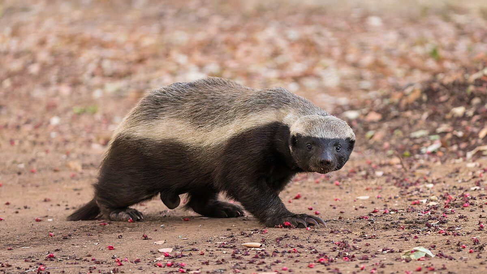

Goated Honey Badger
Yeah man yeah man
The honey badger (Mellivora capensis), also known as the ratel, is a mustelid native to Africa, Southwest Asia, and the Indian subcontinent. It is famous for its thick skin and ferocious defensive abilities. The honey badger is primarily a carnivore and has few natural predators.
Despite its name, the honey badger does not primarily eat honey. It is an opportunistic feeder and has a varied diet that includes small mammals, birds, reptiles, insects, and fruits. It is known for its ability to raid beehives to consume honey and bee larvae, often enduring multiple stings in the process.
| Name | Description |
|---|---|
| Hoth | Eating big leaf |
| BigBertha | Eating Small Animals |